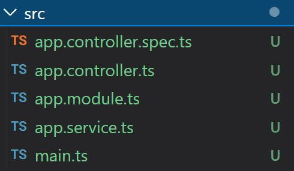
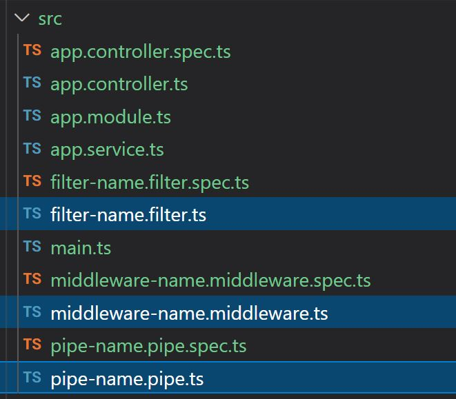

Nestjs - 1. 프로젝트 생성과 구성
Written on June 8th, 2022 by zaimy1. 프로젝트 생성과 구성
1) 프로젝트 생성
$ yarn add @nestjs/cli
$ nest new 프로젝트명 (yarn선택)
2) Nest 기본구성

- 모듈
$ nest g mo module-name외부로 서비스를 공개하고 싶을경우 export 추가
@Module({ controllers: [CatsController], providers: [CatsService], exports: [CatsService], }) export class CatsModule {} - 컨트롤러
$ nest g co controller-name - 서비스
$ nest g service service-name
3) Nest 응용구성

- 미들웨어
$ nest g middleware middleware-name적용시 모듈을 아래와같이 수정
export class AppModule {} => export class AppModule implements NestModule { configure(consumer: MiddlewareConsumer) { consumer.apply(MiddlewareNameMiddleware).forRoutes('*'); } } - 필터
$ nest g filter filter-name개별 적용시 컨트롤러를 아래와같이 수정
@Get() @UseFilters(HttpExceptionFilter) getAllCat() { throw new HttpException({ koko: 'fail' }, HttpStatus.FORBIDDEN); return 'all cat'; }전체 적용시 메인을 아래와같이 수정
const app = await NestFactory.create(AppModule); app.useGlobalFilters(new HttpExceptionFilter()); await app.listen(3000); - 파이프
$ nest g pipe pipe-name파라메터 적용시 아래와같이 수정
@Get(':id') getOneCat(@Param('id', ParseIntPipe) id: number) { return 'one cat'; }커스텀 파이프작성시 아래와 같이 생성
@Injectable() export class PostiveIntPipe implements PipeTransform { transform(value: any, metadata: ArgumentMetadata) { if (value < 0) { throw new HttpException(); } return value; } } - 인터셉터(AOP)
$ nest g interceptor interceptor-name인터셉터 적용시 아래와 같이 사용
@Get('test2') @UseInterceptors(InterceptorNameInterceptor) getHello2(@Param() param: { id: string }): string { return this.catsService.getHello(); }인터셉터 구현
@Injectable() export class InterceptorNameInterceptor implements NestInterceptor { intercept(context: ExecutionContext, next: CallHandler): Observable<any> { return next.handle().pipe(map((data) => ({ success: true, data }))); } } - 라이프사이클
- 글로벌 -> 개별
- request -> middleware -> guard -> interceptor -> pipe -> controller
4) 실행
$ yarn start
$ yarn start:dev
Feel free to share!